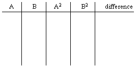

of
Two Problems
|
of Two Problems |
When I see a good problem somewhere, I like to investigate its properties further and deeper, with the intention of using it to develope problem solving skills in my students. Such was the case when I saw the two problems that you will see in this page of WTM. I hope you will agree with me that they can be useful to bring inter- esting math challenges to young students at the upper elementary levels (3rd-6th).Problem #1
The first problem appeared in the 1994 MATHCOUNTS contest exams (School level, Sprint #5). It said:Two positive numbers are such that their difference is 6 and the difference of their squares is 48. What is their sum? The foundation concept of this problem is a perennial topic in all high school Algebra I courses: the difference of two squares pattern. It occurs in the chapters on multiplying and factoring binomials. Solving such a problem in an algebra course is, there- fore, a somewhat regular, if not trivial, matter. A possible solution process might go as follows: 1. x2 - y2 = (x + y)(x - y) 2. x - y = 6 and x2 - y2 = 48 3. 48 = (x + y)(6) 4. x + y = 8 However, elementary students are not expected to work at such an abstract level of thinking. But if they have access to calculators and a little basic guidance in understanding what the problem is all about, they can enjoy a meaningful experience just the same. We proceed by setting up a t-chart to organize our work.
|  |
Filling out the entries -- by educated trial and check --
now becomes an easy task. In fact, for this MATHCOUNTS
problem it is a rather quick one: A = 7 and B = 1; thus the
sum is 8. This is merely because it was part of a large set
of problems to be solved under a time limit. Hence it was
not intended to be a hard, time-consuming item. Also it
should be pointed out that calculators are not allowed on
this portion of the contest.
However, if number size is increased (moderately at first)
and time is removed as a factor, many exercises can now be
formulated. Here are some examples:
1. Two positive numbers are such that their difference
is 6 and the difference of their squares is 180.
What is their sum?
2. Two positive numbers are such that their difference
is 7 and the difference of their squares is 161.
What is their sum?
3. Two positive numbers are such that their difference
is 10 and the difference of their squares is 260.
What is their sum?
4. Two positive numbers are such that their difference
is 15 and the difference of their squares is 555.
What is their sum?
Answers
1. A = 18, B = 12, & sum = 30.
2. A = 15, B = 8, & sum = 23.
3. A = 18, B = 8, & sum = 26.
4. A = 26, B = 11, & sum = 37.

Calculator Connection

Problem #2
This problem likewise appeared as part of the same
MATHCOUNTS contest; it was #23 on the Sprint round.
What is the smallest multiple of 5
the sum of whose digits is 18?
We should remind ourselves once again that this is a
timed contest and no calculators permitted. Hence, one might
be expected to solve this question analytically, perhaps as
follows:
"Since all multiples of 5 end in 5 or 0, and our
desired multiple must contain at least 3 digits, we
are looking for a value in one of these two forms:
aa0 or bc5. The only number in the first form to
have a digital sum of 18 is 990. But it could not
be the smallest one because the b-c digits of the
second form will certainly be smaller due to the
help of the 5.
Of course, the sum of the b-c digits will then be
13, the only possibilities being 4 & 9, 5 & 8, and
6 & 7. Therefore, the smallest multiple will be
produced by the pair containing the smallest digit,
which is 4 & 9. So the problem's answer is 495."
It might be noted here that a new question can be asked
using the facts presented in the above solution. It would be:
How many multiples of 5, less than 1000,
have a sum or their digits that is 18?
The answer of seven is easily seen by making a list like this:
495 585 675 990
945 855 765
Summary
This is a prime example of how one simple problem can be
turned into many, and in which important concepts are present and
yet basic skills can be practiced. Additionally, it is a case where
students could be encouraged to invent their own problems, thus
becoming a more integral part of the learning process, a factor
often overlooked in many math classrooms today.
| Comments? Send e-mail. | Back to top | Go back to Home Page | Go back to Contents |